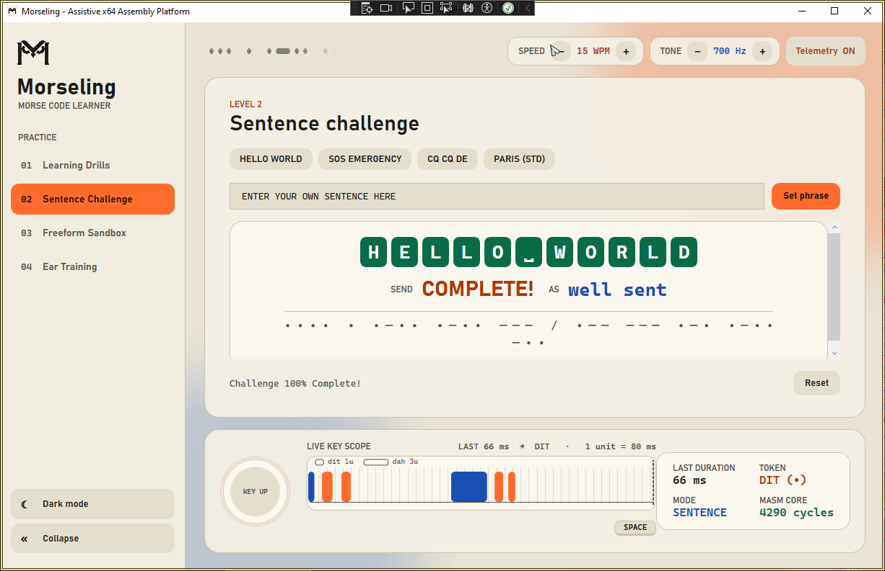
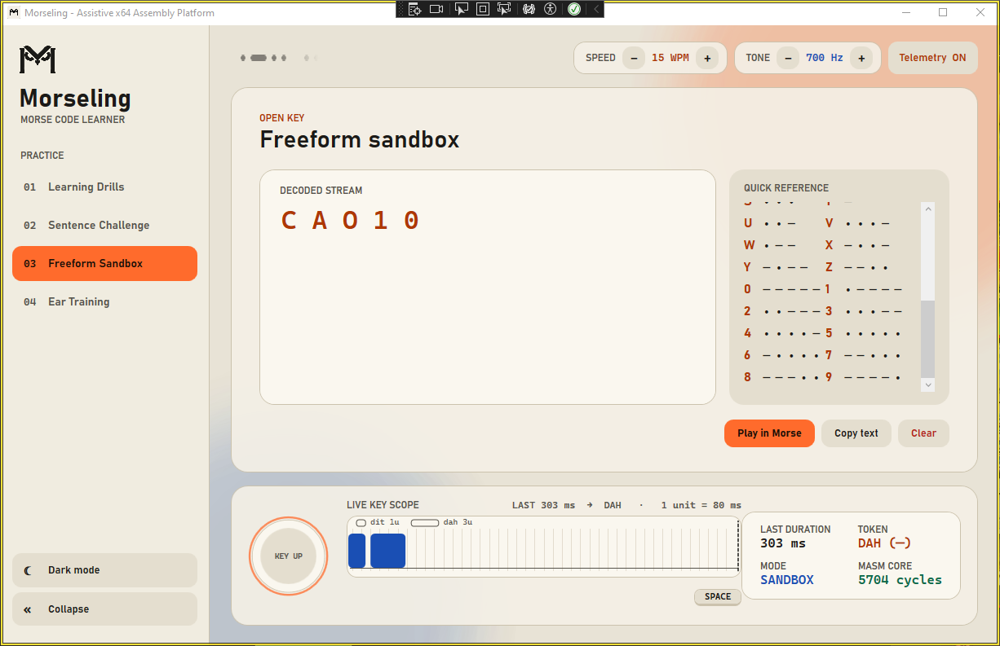
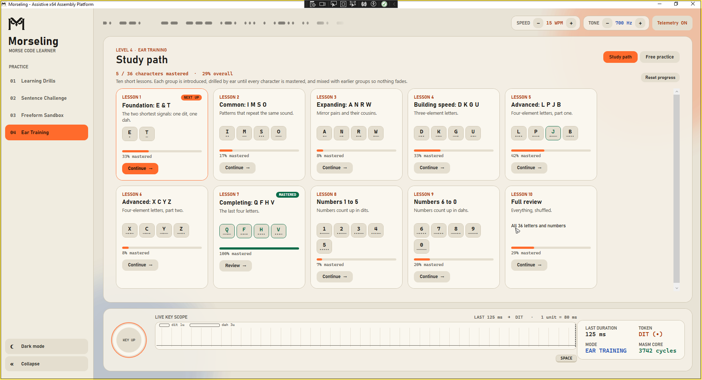
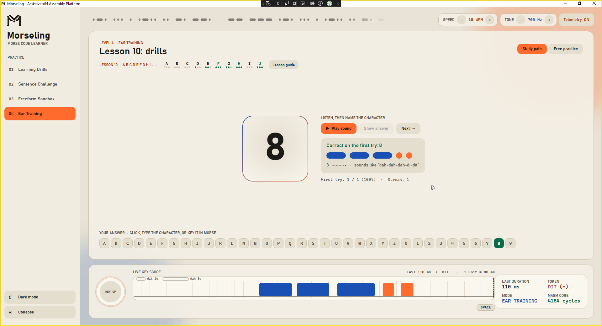
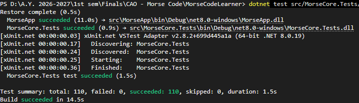

Morseling
An assembly-based assistive and pedagogical platform for Morse code communication and learning
The problem
WHO, 2022 · Nel et al., 2018 · Yang, 2000Common computer input assumes fine motor control, which many people with neuromuscular or speech impairments don't have.
QWERTY keyboards, touchscreens and optical trackers need dexterity and continuous hand–eye coordination.
Commercial AAC and speech software rely on intensive runtimes and proprietary hardware, often impractical where resources are scarce.
Most Morse tools are written in managed languages. GC pauses and OS scheduling add jitter to single-switch timing.
An established, low-complexity binary and tonal protocol. One switch and two durations reach the whole alphabet, as sound, light or touch.
Run signal translation and timing quantization at the processor level, in an x64 assembly core behind an accessible interface.
Objectives
1.2.1 GENERAL · 1.2.2 SPECIFICTo design, implement and evaluate an x86-64 assembly-based Morse code platform that lets people with visual, auditory or speech impairments, and curious learners, practice and use Morse code through deterministic multi-modal feedback.
A clean ABI between an unmanaged 64-bit MASM core and a managed C# presentation layer.
Read-only binary tables that encode characters to packed bitstreams and decode them back in constant time.
16-bit byte-split serialization, press-duration Dit/Dah classification, and RDTSC cycle capture.
High-contrast visual cues, an oscilloscope-style Key Scope, and non-blocking PCM sidetone.
Verify classification across 110 automated integration tests and measure execution determinism.
Scope, limits and who it serves
CH. 1.3 – 1.4- Users: people with speech, motor, auditory or visual constraints, plus architecture students.
- Core: encoding, press quantization, buffer decoding, gap evaluation, cycle tracking.
- Input: one switch (Spacebar or USB assistive switch) plus keyboard.
- Feedback: text, signal lamp, Key Scope, 700 Hz PCM sidetone.
- Drills: character sets, sentences, ear training.
- Hardware: 64-bit Windows PCs with USB HID switches only. No telegraph sounders or UART microcontrollers.
- Characters: A–Z, 0–9 and
. , ?. No prosigns or non-Latin sets. - Language: English characters and words. No predictive text or autocorrect.
- Platform: Native desktop app. No web, cloud or mobile.
- Users with impairments: a non-verbal path from single presses to language.
- AT / HCI developers: a documented managed-to-unmanaged (P/Invoke) template.
- CS educators and students: registers and O(1) indexing applied to a real problem.
- Radio learners: drills, live timing feedback and adjustable speed.
- Researchers: a baseline for haptics, microcontrollers and new symbol sets.
Toolchain and the x64 ABI
MICROSOFT x64 CALLING CONVENTION| Component | Role in Morseling |
|---|---|
| MASM · ml64 | Assembles the x64 core into MorseCore.dll through build-native.ps1. |
| P/Invoke | .NET bridge for native calls, pointer passing and unmanaged memory transitions. |
| C# .NET 8 WPF | High-contrast light/dark UI, large type, live Key Scope. |
| ITU-R M.1677-1 | Timing standard: dit 1, dah 3, gaps of 1, 3 and 7 units. |
| winmm.dll | waveOut streams 16-bit PCM sidetone off the UI thread. |
- Shadow space: the caller reserves 32 bytes (
0x20) of home space before every call. - Alignment: RSP stays 16-byte aligned at each call site.
- Preserved: RBX, RBP, RDI, RSI, R12–R15 are pushed and popped. RAX, RCX, RDX and R8–R11 are volatile.
- Segments: lookup tables live in read-only
.const / .rdata. Buffers are pinned by the caller across P/Invoke.
Decoupled hybrid architecture
CONTEXT.md §2 · CH. 2.4Why not a CLI or an INT 10h GUI?
CH. 3.1.1| Criterion | Text-mode CLI | INT 10h / 16h GUI | Decoupled surface · chosen |
|---|---|---|---|
| Accessibility | 80×25 character cells. No type scaling or high-contrast palettes. | Rudimentary real-mode graphics. | WPF high-contrast themes, large type, Key Scope. |
| Execution mode | Runs, but has no visual bandwidth for live feedback. | 16-bit real mode only. In x64 protected mode it triggers a General Protection Fault. | MASM DLL runs natively in 64-bit protected mode. |
| Audio and timing | Synchronous output blocks the input loop. | Interrupt-driven audio freezes the thread during each tone. | winmm waveOut on its own worker thread. |
MASM x64 MorseCore.dll handles every cycle-critical operation: bit-packed serialization, constant-time tables, microsecond quantization, benchmarking.
C# .NET 8 WPF host for visual feedback, responsive key listeners, and unbuffered audio that never blocks the native calls.
One character, one 16-bit word
lookup_tables.asm · .const · ALIGN 16DB 4, 0Ah → AX = 0x0A04
- No strings, no heap: count and pattern share one register, so both fields are readable without runtime extraction shifts.
- Direct ASCII table: 128 words in read-only
.const, read with a single[rdx + rcx*2]fetch. - Up to N = 6: covers punctuation like
.-.-.-and..--...
Index = (2N − 2) + pattern
| N | Pattern | Index | Morse | ASCII |
|---|---|---|---|---|
| 1 | 0₂ | 0 | E | |
| 1 | 1₂ | 1 | T | |
| 2 | 01₂ | 3 | A | |
| 2 | 10₂ | 4 | N | |
| 3 | 000₂ | 6 | S | |
| 3 | 111₂ | 13 | O |
Inside the MASM core
encoder.asm · quantizer.asmMorse_EncodeChar PROC cmp ecx, 'a' ; below 'a'? nothing to fold jb @Lookup cmp ecx, 'z' ja @Lookup sub ecx, 20h ; fold lowercase to uppercase @Lookup: and ecx, 7Fh ; clamp index to 0..127 lea rdx, MorseAsciiTable movzx eax, word ptr [rdx + rcx * 2] ret ; O(1): one memory read Morse_EncodeChar ENDP
Case folding is one subtraction. The table read is one base + index×2 fetch, with no loops and no data-dependent branches.
Morse_QuantizePress PROC mov r8, rdx shr r8, 2 ; T/4 (debounce floor) cmp rcx, r8 jb @Debounce ; → 0 NONE imul r9, rdx, 6 ; 6T (hold ceiling) cmp rcx, r9 ja @OverExtended ; → 3 INVALID mov r8, rdx shl r8, 1 ; 2T (dit / dah edge) cmp rcx, r8 jae @IsDah ; → 2 DAH mov eax, 1 ; → 1 DIT ret
Integer shifts and multiplies only. No division and no FPU. Volatile registers only, so nothing needs saving.
Unit-relative timing
T = 1,200,000 / WPM µs · 15 WPM → T = 80 ms · scale 0–8TBelow 0.25T returns 0 (NONE): switch bounce is rejected before it reaches the buffer.
They sit between the ideal ITU lengths (1T, 3T, 7T), which tolerates human timing error at any WPM.
Dit 1T, dah 3T, element gap 1T, letter gap 3T, word gap 7T. timeBeginPeriod(1) plus a spin-wait keeps short units accurate.
rdtsc · shl rdx,32 · or rax,rdx gives a 64-bit cycle stamp. The app reads ~3–6 k cycles per native call.
Four modes, one switch
FIGURES 3.1c – 3.1dSee a character, key its pattern. Streaks and alphabet strip.
Transcribe a phrase. 2.5T and 6T gaps are checked live.
Open keying to text, then play it back in Morse.
Hear it, name it. Answer by click, keyboard or key.


A scrolling trace of the key line, 42 units wide. A perfect dit fills one grid cell and a dah fills three. The scale follows WPM.
Each bar's class comes straight from Morse_QuantizePress, so users can watch the thresholds work.
Readout: LAST 303 ms → DAH · MASM core 5704 cycles
Learning that sticks
FIGURES 3.1e – 3.1h| 01 | E T | single element | 06 | X C Y Z | four elements, part 2 |
| 02 | I M S O | repeat-only | 07 | Q F H V | remaining letters |
| 03 | A N R W | mirror pairs | 08 | 1 – 5 | dits take over |
| 04 | D K G U | three elements | 09 | 6 – 0 | dahs take over |
| 05 | L P J B | four elements, part 1 | 10 | All 36 | mixed review |
Correct on the first try: ℓ + 1. A miss or Show answer: ℓ − 1. A lesson is done when every character reaches 3. Progress is saved to %AppData%.
w(c) = 4 − ℓ(c)
An unlearned character appears 4× as often as a mastered one. 20% of rounds review earlier lessons.
Study guides derive relations automatically, such as "Reverse of N" and "Opposite of T", from each pattern's reverse and inverse. These parameters are design choices and haven't been validated with users yet.


Verified against the real DLL
src/MorseCore.Tests · xUnit · x64Tests call MorseCore.dll through the same NativeMethods / MorseEngineService path as the app, so the routines, the ABI boundary and the unit math are proven together.

| ID | Routine | Input | Expected = actual | |
|---|---|---|---|---|
| ENC-A | EncodeChar | 'A' | PASS | |
| ENC-LOWER | EncodeChar | 'a'..'z' | same as 'A'..'Z' | PASS |
| DEC-6-0C | DecodeChar | N=6, 0x0C | '?' | PASS |
| DEC-COUNT7 | DecodeChar | N=7 | 0 (rejected) | PASS |
| QP-05-C | QuantizePress | t = T/4 @ 5 WPM | DIT | PASS |
| GAP-15-D | EvaluateGap | 200 ms @ 15 WPM | COMMIT CHAR | PASS |
| GAP-15-G | EvaluateGap | 480 ms @ 15 WPM | COMMIT WORD | PASS |
| RT-? | Decode(Encode) | '?' | '?' round-trip | PASS |
| BENCH-MONO | BenchmarkCycles | 1000 reads | non-decreasing | PASS |
What's next
THANK YOU · QUESTIONS WELCOME- Runs only on 64-bit Windows: the core is bound to the Microsoft x64 ABI.
- Key timing is limited by the USB polling interval of the switch.
- Tests prove correctness, not usability. Only classmates have tried it, with no study yet involving the intended users.
- Lesson learned: generate expected test values from
lookup_tables.asm, because hand-typed values can pass against a wrong table.
- First: a usability study with the intended users, measuring error rates and learning curves.
- Input: a Pico or STM32 that presents a telegraph key as USB HID.
- Output: haptic Dit/Dah through linear resonant actuators (Plaisier et al., 2020).
- Adaptive T from recent keying (Yang, 2000), plus prosigns and non-Latin tables.
Assistive switch viability and the core engine assembly code.
App functions and the link from the assembly engine to C# / WPF.
UI/UX design of the learner pages, plus documentation.